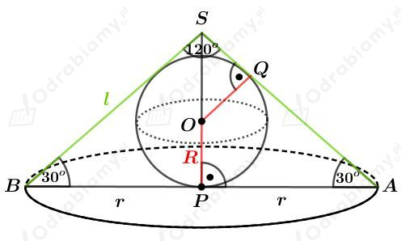

Kul o promieniu dugoci R mo偶na wpisa w pewien graniastosup prawidowy tr贸jktny i w pewien graniastosup prawidowy czworoktny.
Rysunki:
oraz
Dugo promienia R kuli jest r贸wna dugoci promienia okrgu wpisanego w tr贸jkt r贸wnoboczny ABC. Korzystajc ze wzoru na dugo wysokoci tr贸jkta r贸wnobocznego mamy:
Obliczmy objto tego graniastosupa prawidowego tr贸jktnego. Mamy:
Obliczmy objto tego graniastosupa prawidowego czworoktnego. Mamy:
Wyznaczmy stosunek objtoci tych graniastosup贸w. Mamy:
co koczy dow贸d.
Dany jest graniastosup prawidowy szecioktny o krawdzi podstawy dugoci 6.
Dana jest kula o rodku O i promieniu dugoci R.
Na tej kuli opisano podany graniastosup.
Naszkicujmy podstaw tego graniastosupa:
Dugo promienia R jest r贸wna dugoci wysokoci tr贸jkta r贸wnobocznego o boku dugoci 5, czyli
Wysoko tego graniastosupa ma dugo podwojonej dugoci promienia tej kuli, czyli
Rysunek:
Tr贸jkt ACS jest tr贸jktem r贸wnobocznym.
Odcinek AC jest przektn kwadratu o boku dugoci a, zatem
Odcinek PS jest wysokoci tr贸jkta r贸wnobocznego ACS. Korzystajc ze wzoru na dugo wysokoci tr贸jkta r贸wnobocznego mamy:
Korzystajc z twierdzenia Pitagorasa dla tr贸jkta PFS mamy:
Tr贸jkty SOQ i SFP s podobne. Mamy zatem:
Wyznaczmy objto tego ostrosupa. Mamy:
Wyznaczmy objto tej kuli. Mamy:
Wyznaczmy stosunek objtoci tej kuli do objtoci tego ostrosupa. Mamy:
Rysunek:
Wyznaczmy tangens kta. Mamy:
wic
czyli
Kt dwucienny zawarty midzy cian boczn a podstaw tego ostrosupa ma miar 60o.
Rysunek:
Korzystajc z twierdzenia Pitagorasa dla tr贸jkta SFC mamy:
Korzystajc z twierdzenia Pitagorasa dla tr贸jkta SFC mamy:
Korzystajc z podobiestwa tr贸jkt贸wSPF i SQO otrzymujemy:
Rysunek:
Korzystajc ze wzoru na dugo wysokoci tr贸jkta r贸wnobocznego mamy:
Korzystajc z twierdzenia Pitagorasa dla tr贸jkta APS mamy:
Korzystajc z twierdzenia Pitagorasa dla tr贸jkta KBS mamy:
Korzystajc z podobiestwa tr贸jkt贸w OGS i LPS otrzymujemy:
Wyznaczmy pole powierzchni tej kuli. Mamy:
Dany jest ostrosup n-ktny. Taki ostrosup zbudowany jest z n cian bocznych i jednej podstawy.
Ten ostrosup opisany jest na kuli o promieniu dugoci r.
Niech P1, P2, P3, ..., Pn bd polami powierzchni bocznych, a Pp niech bdzie polem powierzchni podstawy.
Z treci zadania wiemy, 偶e pole powierzchni cakowitej wynosi Pc, wic mo偶emy zapisa:
Podzielmy podany ostrosup na n+1 ostrosup贸w takich, 偶e ich wierzchokami jest rodek kuli, a ich podstawami s ciany boczne i podstawa pocztkowego ostrosupa.
Wiemy std, 偶e dugo wysokoci tak powstaego ostrosupa jest r贸wna dugoci promienia r kuli wpisanej. Spodki tych wysokoci to punkty stycznoci kuli i pocztkowego ostrosupa.
Wyznaczmy objto pocztkowego ostrosupa. Mamy:
co koczy dow贸d.
a)
Rysunek:
Z treci zadania wiemy, 偶e przekr贸j osiowy tego sto偶ka jest tr贸jktem prostoktnym o polu r贸wnym S. Mamy std:
Skoro tr贸jkt ABS jest tr贸jktem prostoktnym r贸wnoramiennym, to
Dugo promienia R kuli wpisanej w ten sto偶ek jest r贸wna dugoci promienia okrgu wpisanego w tr贸jkt prostoktny ABS.
Korzystajc ze wzoru na dugo promienia okrgu wpisanego w tr贸jkt prostoktny mamy:
Wyznaczmy pole powierzchni tej kuli. Mamy:
b)
Rysunek:

Korzystajc z funkcji tangens mamy:
Korzystajc z funkcji sinusmamy:
Wiedzc, 偶e pole tr贸jkta ABS wynosi S otrzymujemy:
Korzystajc z podobiestwa tr贸jkt贸w SQO i SPA otrzymujemy:
Obie strony r贸wnoci s dodatnie. Podnosimy obie strony do kwadratu.
Wyznaczmy pole powierzchni tej kuli. Mamy:
Rysunek:
Wyznaczmy pole powierzchni kuli. Mamy:
Wyznaczmy pole powierzchni cakowitej sto偶ka. Mamy:
Z treci zadania wiemy, 偶e kula ma pole powierzchni dwa razy mniejsze od pola powierzchni cakowitej sto偶ka. Mamy std:
Korzystajc z podobiestwa tr贸jkt贸w SOQ i SAP mamy:
Korzystajc z twierdzenia Pitagorasa dla tr贸jkta PAS mamy:
Wyznaczmy dugo tworzcej l tego sto偶ka. Mamy:
Wyznaczmy cosinus kta. Mamy:
Dany jest sto偶ek city, kt贸rego podstawami s koa o promieniach dugoci 2 i 8. W ten sto偶ek wpisano kul o rodku w punkcie O i promieniu dugoci R.
Rysunek:
Korzystajc z wasnoci czworokta opisanego na okrgu otrzymujemy:
Korzystajc z twierdzenia Pitagorasa dla tr贸jkta AED mamy:
Dugo promienia R stanowi poow dugoci wysokoci tego trapezu, wic:
Wyznaczmy objto tej kuli. Mamy:
Rysunek pomocniczy:
ciana boczna tej bryy wyglda nastpujco:
Korzystajc z funkcji trygonometrycznych otrzymujemy:
Przekr贸j tej bryy wyglda nastpujco:
Zauwa偶my, 偶e dugoci 2a i 2b wynikaj tego, 偶e mamy do czynienia z szecioktem foremnym w podstawie i w niebeskim przekroju. Z podobiestwa tr贸jkt贸w dla ciany i przekroju otrzymujemy:
Zauwa偶my, 偶e jeli mo偶na wpisa okrg w czworokt to speniony jest warunek:
Wiemy, 偶e
Zatem:
Nastpnie mo偶emy przeksztacia:
Obliczmy objto ostrosupa nad paszczyzn przecicia:
Obliczmy objto ostrosupa pod paszczyzn przecicia:
Obliczmy stosunek tych objtoci: